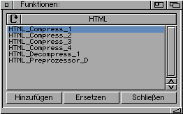
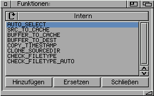

| [Zurück] [Erste Seite] |
| Auswahlfenster | |
|---|---|
| Listen für HTML, ARexx, AmigaGuide, ASCII und Intern |  Hier werden die jeweils installierten Plugins bzw. Internen- Funktionen aufgelistet. Die Listen werden über das Cycle-Gadget gewechselt. Hinzufügen: Fügt die Angewählte Funktion vor die Angewählte, in der Funktionsliste ein. Ersetzen: Ersetzt die aktuelle in der Funktionsliste. Schließen: Macht das Fenster wieder zu ... |
| Interne Funktionen | |
|---|---|
|  Die Liste der Internen Funktionen. | |
| AUTO_SELECT: | Wählt die Dateien automatisch aus, wenn folgende Bedingungen erfüllt sind:
|
| SRC_TO_CACHE: | Kopiert die ausgewählten Dateien in den Cache. Dies ist nötig wenn:
|
| BUFFER_TO_CACHE: | Kopiert den Puffer in den Cache zurück. Dies ist notwendig, wenn die Dateien mit einem weiteren Plugin bearbeitet werden sollen. Funktioniert nur, wenn vorher SRC_TO_CACHE ausgeführt wurde! |
| BUFFER_TO_DEST: | Kopiert den Puffer in das Zielverzeichnis. Funktioniert nur, wenn vorher SRC_TO_CACHE ausgeführt wurde! |
| COPY_TIMESTAMP: | Kopiert das Datum und die Uhrzeit der Quell-, zu den Zieldateien. |
| CLONE_SRCDIR: | Kopiert alle Dateien im Quellverzeichnis, die nicht dem Namensmuster entsprechen, ins Zielverzeichnis. |
| CHECK_FILETYPE: | Prüft ob die Datei zum NACHFOLGENDEN Plugin in der Liste, paßt. Wenn nicht, erscheint eine Rückfrage, ob die Datei einfach kopiert oder trotzdem Bearbeitet werden soll. |
| CHECK_FILETYPE_AUTO: | Prüft ob die Datei zum NACHFOLGENDEN Plugin in der Liste, paßt. Wenn nicht, wird sie ins Zielverzeichnis kopiert. |
Das Programm arbeitet mit zwei temporären Verzeichnissen:
|
| [Zurück] [Erste Seite] |